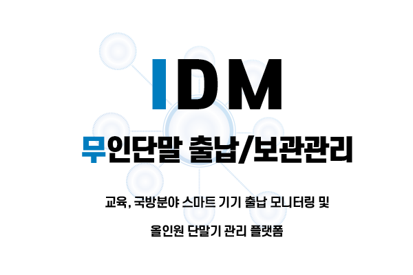
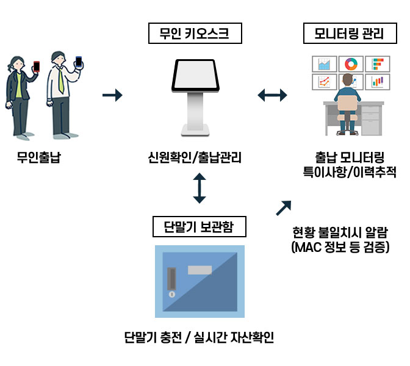

IDM
무인단말출납/보관관리


무인단말출납/보관관리
교육, 국방분야 스마트 기기 출납 모니터링 및 올인원 단말기 관리 플랫폼

서비스 특징
- 무인화 키오스크 기반 교육/국방 대상 스마트 단말기 출납/재고 통합관리
- 교육기관 : 교육용 스마트 단말기 관리
- 국방 : 장병 스마트폰 사용 후 체계적인 관리
- 다양한 신원확인 및 단말관리 시스템 (QR, 시리얼통신)
- 체계적인고 효율적인 전산화 관리 및 모니터링
- 분실 및 관리를 위한 인적/물적 관리비용 절감